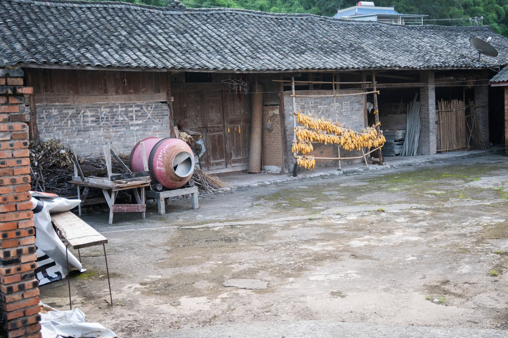
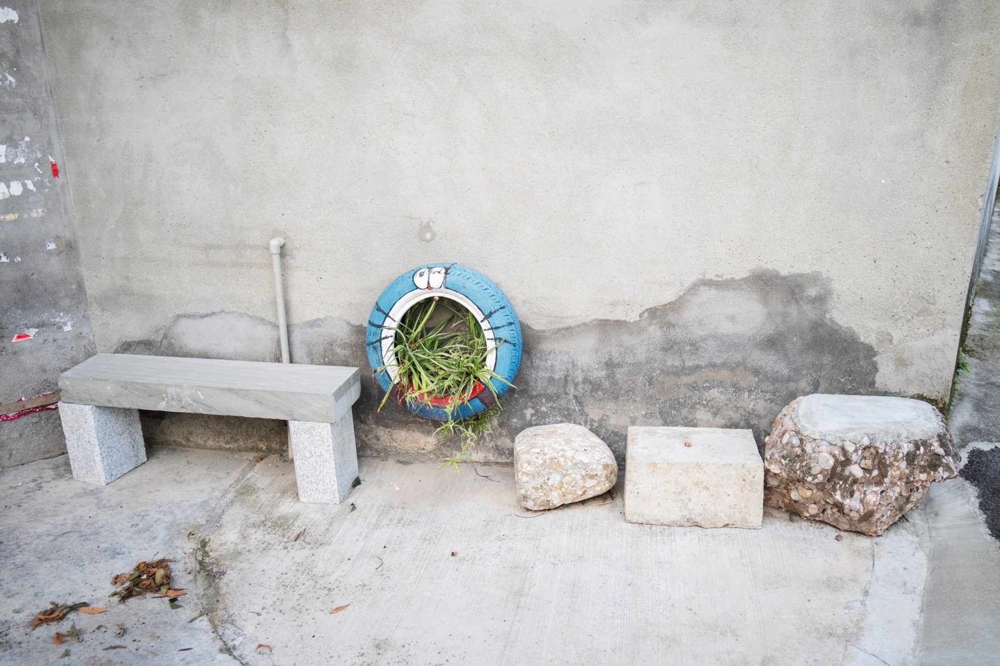
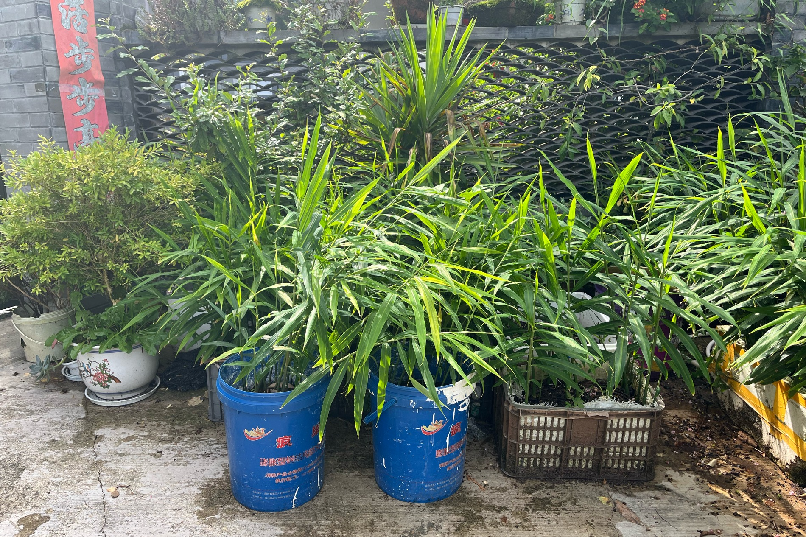
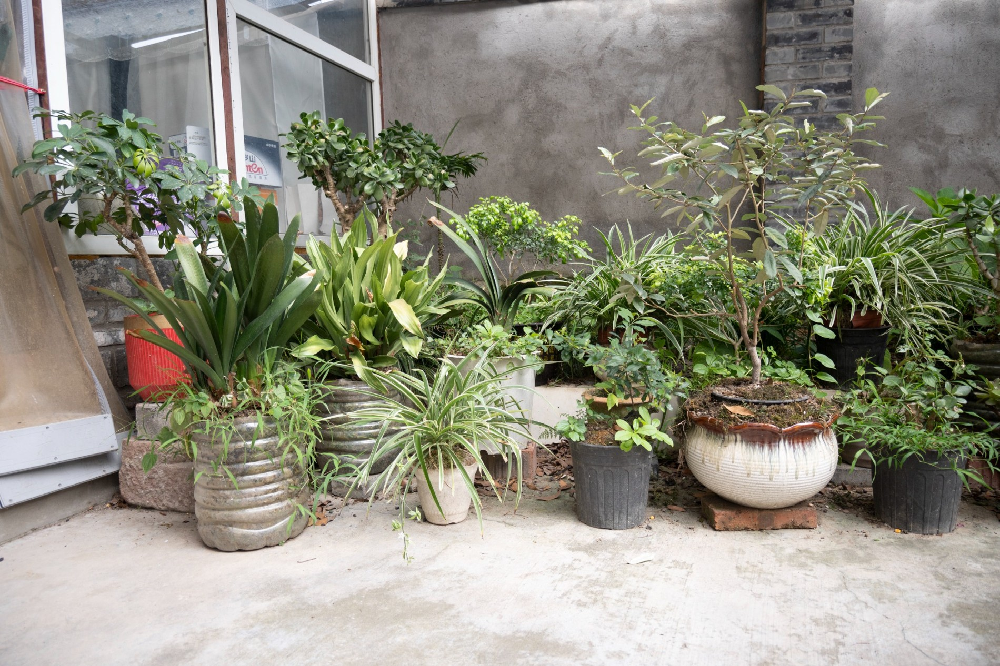
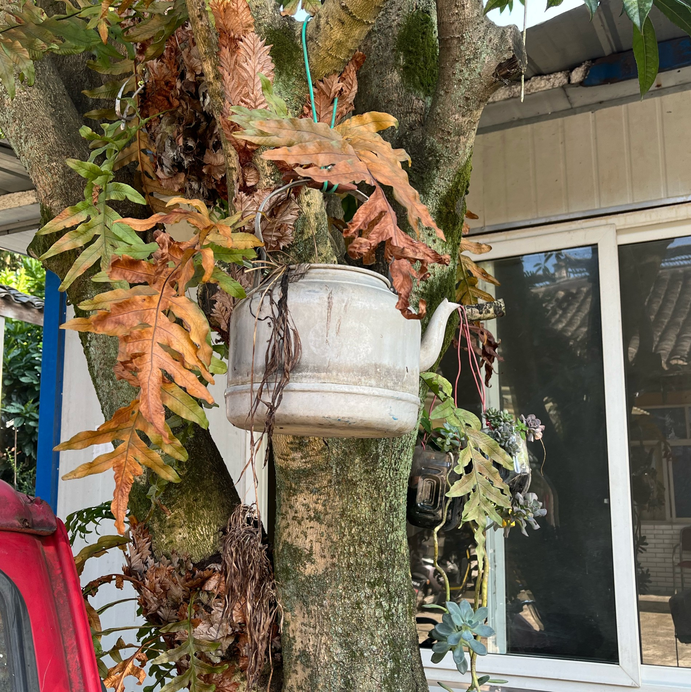
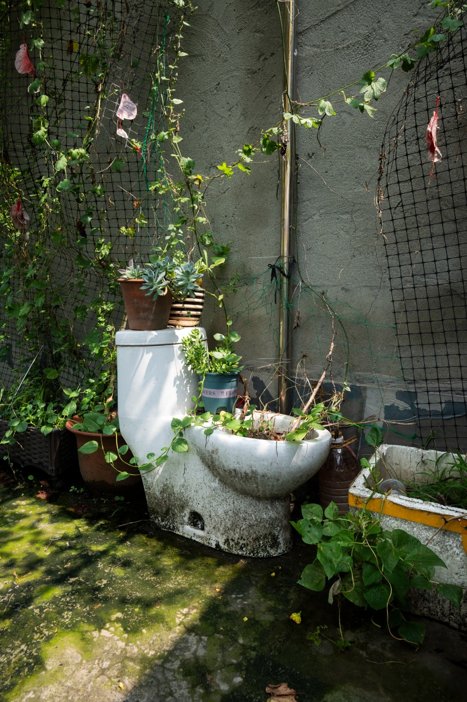

Habitland: How Habit Take Root
以前回老家时，我很少认真看院子里的植物。对我来说，这些都是很普通的生活背景。今年夏天来到四川大邑县新民村做田野调查，在村里散步时，才发现这些熟悉的院子里有很多我以前没有留意的东西。村子除了被承包的田以外，道路和村民的院子都铺了水泥。但种菜的习惯仍然延续着，在庭院中发现了不少农村人的智慧。
When I used to visit my family’s home in the countryside, I rarely looked closely at the plants in the courtyard. To me, they were simply part of the everyday surroundings. This summer, I travelled to Xinmin Village in Dayi County, Sichuan, China, to conduct fieldwork. When I walked around the village, I began noticing things in these familiar courtyards that I had previously overlooked. Apart from the farmland leased out for cultivation, the village roads and residents’ courtyards were covered in concrete. Yet the habit of growing vegetables continued. In these courtyards, I discovered many examples of rural ingenuity.


据村民所说，庭院里的容器几乎没有买的，有些从路边或者种植基地捡的，有些是自家用不上了的。泡沫箱和矿泉水桶是最受欢迎的种菜容器，还有不少人喜欢用搪瓷盆和洗衣液瓶。有些塑料桶被太阳晒得褪色，但似乎都不影响里面的植物继续生长。它们的大小、颜色和形状没有什么统一的标准，摆在一起却让人觉得很自然。我以前也在农场长大，这些场景仿佛将我带回童年，但那时从来没有觉得这些值得停下来拍一张照片。但农场老家的房子在几年前已经被拆掉，原来的院子也没有了。
According to the residents, hardly any of their planting containers had been bought. Some had been collected from roadsides or plant nurseries, while others were household items that were no longer needed. Polystyrene boxes and large water bottles were the most popular containers for growing vegetables, and many people also used enamel basins and laundry detergent bottles. Some plastic buckets had faded in the sun, but this did not seem to stop the plants inside from growing. Their sizes, colours and shapes followed no particular pattern, yet they looked quite at home together. Having grown up on a farm myself, I found that these scenes brought me back to my childhood. Back then, I had never thought they were worth stopping to photograph. But our old farmhouse was demolished a few years ago, and its courtyard is gone too.



舅舅一家也因为拆迁搬到城里，但舅妈仍然在楼顶的露台上种菜、养鸡，场景和在村里看到的几乎一模一样。我在那里又看到了泡沫箱和旧桶，轮胎里装着土，一个旧马桶也成了生产丝瓜的地方，也看到一些买来的花盆，不过在城里种子只能买了。
My uncle’s family also moved to the city following the demolition of their home. My aunt, however, still grows vegetables and keeps chickens on their roof terrace. The scene was almost identical to what I had seen in the village. There were polystyrene boxes and old buckets again, tyres filled with soil, and even an old toilet being used to grow loofahs. There were also a few shop-bought flowerpots, although in the city, the seeds now had to be bought too.
有趣的是，房子和住的地方变了，一些日常习惯却留了下来。有空地就想种一点东西，看到能用的容器会留下，这可能就是中国农村人的文化共性。
What interested me was that, although the house and its location had changed, some everyday habits remained. An empty space was somewhere to grow something, and a useful container was worth keeping. Perhaps these are habits shared by many people from rural China.
现在看到空瓶或旧盆，我也会先想一下，它能不能种点东西。以前被我当作背景的生活习惯，正在慢慢变成我自己会做的事情。
Now, when I see an empty bottle or an old basin, I also pause to consider whether I could grow something in it. The everyday habits I once treated as background are gradually becoming things I do myself.
